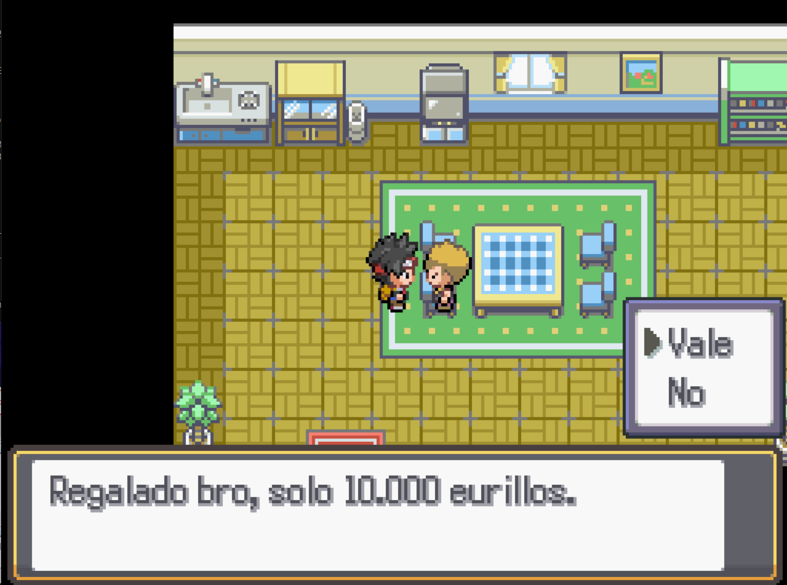

Playa Espeto
Para llegar a la Playa Espeto, tendrás que bajar desde el puerto. Son zonas con diferente nombre por lo que podrás capturar Pokemoitos dos veces, aunque para capturar en la Playa Espeto necesitarás una caña especial.
Si bajas por la playa encontrarás una chica pescando, ella te contará que en la casa de arriba podrías conseguir una caña. El pescador te hará una petición a cambio de la caña. Tendrás que bucear y conseguir un anillo que se le cayó al mar.
Puedes seguir la misión aquí.
Si sigues el camino encontrarás un puente que se dirige al Sur, pero vamos a ignorarlo y seguiremos al Este, donde encontrarás una casa con un chico dentro, te ofrecerá un Pokemoito Shiny a cambio de 10.000 eurillos.
Por último, al norte de la casa encontrarás el Gimnasio Espeto, sin embargo, estará cerrado.
Tendrás que ir hacia el sur y cruzar el puente que viste antes, allí te encontrarás con unas personitas que lucharán contra ti.
Luchando contigo estarán comprobando los rumores sobre tu fuerza y cuando les derrotes, te contarán que el Jefazo tiene su base secreta dentro de la empresa, justo al cruzar el puente.
Te pedirán que entres y le derrotes para acabar con la maldad de la organización y después se irán a buscar más ayuda.